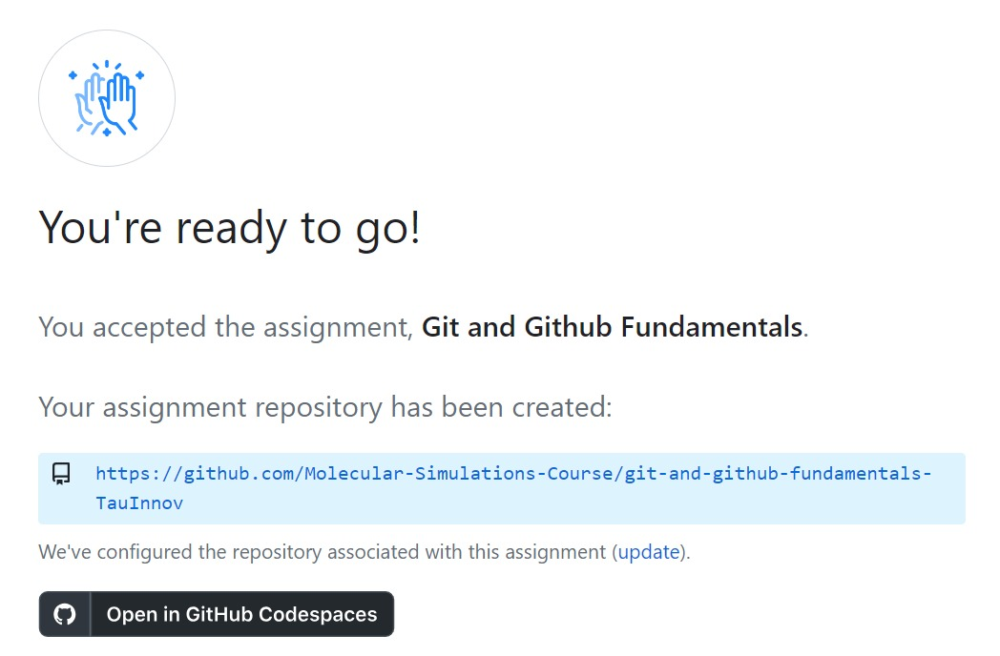
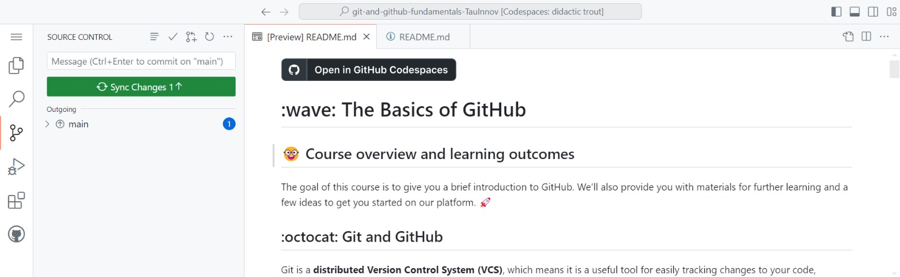
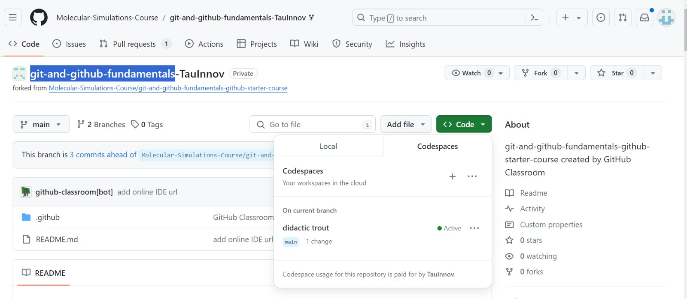

Prerequisites for numerical projects
Contents
Prerequisites for numerical projects¶
Before you start your first project, here are some instructions and prerequisites for setting up your development environment.
The Linux terminal¶
Linux terminals are command-line interfaces that allow users to interact with the operating system through text-based commands. These terminals provide powerful tools for managing files, processes, and system resources, enabling users to execute commands, write scripts, and automate tasks efficiently.
If you have never used it, I highly recommend knowing it. You can see, for example, this basic tutorial by Ubuntu, one of the most popular Linux distributions. The operating system of your computer does not have to be Linux to use the Linux terminal. Mac OS has a terminal, and so does Windows. On Mac, just open the terminal. To enable the Windows Subsystem for Linux (WSL), see the following instructions. You do not have to use the Linux terminal if you do not want to. To complete the project, you can either use Codespaces (see below) or have a local Anaconda installation and GitHub Desktop (see below).
GitHub basics¶
GitHub is a code hosting platform for software development. It relies on an open-source version control system called Git. De facto, all software development projects today use some kind of version control. It allows us to develop the code together as a team, keep track of changes, suggest new features, and merge everything in a simple workflow.
The basic object is a repository (“repo”), which stores all of the source code for the project. You can create your repo or clone (GitHub jargon for copying) an existing repo. You can also fork a repo, which is similar to cloning, but you typically do it when you want to contribute your changes back to the original repo and not just develop your version.
Each repository can have several branches. The default one is called main. When you want to implement a new feature, the typical workflow is to clone the repository and create a new branch dedicated to your feature. In this way, you will not change the main version of the code while you work. Next, you develop the new feature by adding or editing the source code. Every time you would like to save a checkpoint that you could return to if needed, you should commit your changes and push them to update the remote repository. When you want to discuss your changes and consult with your team, you can create a pull request on GitHub. Once you are done with all changes, you must merge your branch back with the original main branch. This is done by closing the pull request and merging.
Let’s open an account:
Create a free account on GitHub.
Free upgrade to Pro with GitHub Student Developer Pack.
GitHub Classroom Assignments¶
The course assignments will be handled through GitHub Classroom, which simplifies the management of programming assignments by using GitHub’s repository and version control features. It allows teachers to distribute tasks and review student submissions efficiently, enhancing collaboration and feedback in computer science education.
The first “assignment” is an exercise developed by GitHub to let you practice this workflow. It will explain everything I mentioned in brief and more. This and all next assignments can be done using the GitHub Codespaces environment (recommended) or a local development environment (for more advanced users who are at ease with Linux and Anaconda).
You will need to accept each assignment. For example, accept the first “assignment” using the following link course’s GitHub fundamentals repository.
Click the green Autorize GitHub Classroom button and then click Accept this assignment. This will create your assignment’s remote repository.

The git-and-github-fundamentals has one README.md text file which explains the GitHub workflow. Read it carefully, follow the links as needed, and ensure you understand GitHub’s workflow.
Selecting a working environment, you may choose between the following two options:
1. Github Codespaces:¶
GitHub Codespaces is a cloud-based platform provided by GitHub, offering a fully configured and customizable development environment directly within the browser. It enables developers to create, edit, and run code without setting up anything on your local machine. This service supports Visual Studio Code, allowing for a seamless and familiar coding experience. Additionally, it allows multiple developers to work in the same environment.
Click the black button Open in GitHub Codespaces to open a new window with the Codespaces environment. As you may see, this environment allows you to edit the GitHub fundamentals repository in your browser, offering full GitHub functionallity using the icons on the left of your screen.
Save & Sync¶

To save and sync changes, click on the source control button on the left of the screen, add a short message describing the changes you have made in the message line, then push the green Commit button. On the message prompt click Yes, then push the new green button Sync Changes to update your remote repository.
Codespaces Access¶
After you saved your work, you can exit codespaces by simply closing its tab. Anytime you wish to re-access it, open GitHub and click your git-and-github-fundamentals-YOURNAME repository. Click the green button Code and select the Codespaces tab. This should feature the last codespaces environment you opened and allow you to access it.

2. Local Git Development:¶
Alternatively, you may use Git on your local machine to manage and track changes in the code. This method offers the flexibility to work offline and experiment with different features in isolated branches but requires more advanced configuration management skills.
To do it, first choose whether you will be working with a graphical user interface (GUI) or through the terminal:
For GUI users |
For terminal users |
|---|---|
Install GitHub Desktop to clone, commit and push to repo. |
Windows: Install WSL. Follow these instructions. In other OS, terminals are already built in. |
Install Anaconda and work with Spyder to edit files. You can also use Pycharm if you prefer, but it is not installed by default with Anaconda.
Clone the first assignment’s repository locally to your computer using the GitHub classroom link (edit YOURNAME):
https://github.com/Molecular-Simulations-Course/git-and-github-fundamentals-YOURNAME. The changes you will make on your local copy will not affect the remote one until you push your changes.
git clone https://github.com/Molecular-Simulations-Course/git-and-github-fundamentals-YOURNAME
Create your branch and switch to working in it using the command
git checkout -b myBranch
Create a new Markdown file
Hello_world.mdusing Spyder and add to it some text.Commit your changes.
git commit Hello_world.md
Push your changes to the remote repo.
git push
All of the steps above can also be done using the GUI of GitHub desktop instead.
Test Driven Development¶
Test Driven Development (TDD) is a software development approach where tests are written before the actual code. The process involves writing a test for a specific functionality, running the test to see it fail (since the feature is not yet implemented), and then writing the minimum amount of code required to pass the test. After the code passes the test, it is refactored to improve its structure while ensuring that all tests still pass. TDD promotes better design, higher code quality, and ensures that the software is thoroughly tested from the outset, leading to fewer bugs and more maintainable code.
Doctest¶
Under TDD guidelines, you will work with Python’s doctest module. It allows you to embed test cases directly in your docstrings and run them as part of your documentation. By writing tests within the docstrings of your functions, classes, or modules, doctest can execute these snippets of code to verify that they produce the expected output. This approach is useful for ensuring that your code examples in documentation are accurate and up-to-date. It also serves as a lightweight testing framework, making it easy to validate small units of code without needing a separate test script. Doctest promotes writing clear and executable documentation, which can improve code reliability and maintainability.
How does Doctest work?¶
To find and run your test cases, doctest follows a few steps:
Searches for text that looks like Python interactive sessions in your documentation and docstrings
Parses those pieces of text to distinguish between executable code and expected results
Runs the executable code like regular Python code
Compares the execution result with the expected result
In the following section, you’ll learn how to check the return values the printed outputs of a given piece of code. You’ll also learn how to create test cases for code that must raise exceptions and how to run preparation steps before executing your test cases.
Rules of Thumb for Testing¶
Writing tests for code is crucial for ensuring its reliability and robustness, especially when considering extreme cases:
Very Large or Small Numbers: Test with the maximum and minimum values the data type can hold.
Zero and Negative Numbers: Include tests for zero and various negative numbers.
Empty Strings: Ensure the function handles empty string inputs appropriately.
Null Values: Verify that the code gracefully handles null or undefined inputs.
Invalid Data Types: Test the function with unexpected data types to check for robustness.
By rigorously testing these extremes, developers can uncover potential issues and ensure their code handles all possible scenarios gracefully, resulting in more stable and dependable software.
Adding doctest to your code:¶
To add doctest testing to your code, in the documentaion of your function func(), add the following statements with test input and expected output:
'''
Example:
>>> func(test_input)
expected output
'''
'\nExample:\n >>> func(test_input)\n expected output\n'
Since the tests are in comments, they will be ignored by the interpreter. To enable them, add the following to your code:
import doctest
doctest.testmod()
TestResults(failed=0, attempted=0)
This will call the doctest module and run the tests.
Examples¶
In the following example we demonstrate how to add doctest to your code, while testing extreme cases:
Example 1: Calculating a Numerical Value
Let’s write a function to calculate the factorial of a number and add doctest examples to its docstring.
def factorial(n):
"""
Calculate the factorial of a non-negative integer n.
Parameters:
n (int): A non-negative integer.
Returns:
int: The factorial of the given number.
Example:
>>> factorial(5)
120
>>> factorial(0)
1
>>> factorial(3)
6
"""
if n < 0:
raise ValueError("n must be a non-negative integer.")
if n == 0:
return 1
result = 1
for i in range(1, n + 1):
result *= i
return result
import doctest
doctest.testmod()
TestResults(failed=0, attempted=3)
As we can see, our function passes the tests in various cases. Let’s modify the factorial function to introduce an error:
def factorial(n):
"""
Calculate the factorial of a non-negative integer n.
Parameters:
n (int): A non-negative integer.
Returns:
int: The factorial of the given number.
Example:
>>> factorial(5)
120
>>> factorial(0)
1
>>> factorial(3)
6
>>> factorial(4)
24
"""
if n < 0:
raise ValueError("n must be a non-negative integer.")
if n == 0:
return 1
result = 1
for i in range(1, n): # Introduced error: should be range(1, n + 1)
result *= i
return result
import doctest
doctest.testmod()
**********************************************************************
File "__main__", line 12, in __main__.factorial
Failed example:
factorial(5)
Expected:
120
Got:
24
**********************************************************************
File "__main__", line 16, in __main__.factorial
Failed example:
factorial(3)
Expected:
6
Got:
2
**********************************************************************
File "__main__", line 18, in __main__.factorial
Failed example:
factorial(4)
Expected:
24
Got:
6
**********************************************************************
1 items had failures:
3 of 4 in __main__.factorial
***Test Failed*** 3 failures.
TestResults(failed=3, attempted=4)
the doctest result summary indicates all tests have failed. This indicates an error in our code (in this case we missed the last product).
Testing Class Methods¶
Using doctest to test class methods follows the same principles as testing standalone functions. You include example inputs and expected outputs within the docstring of the class methods. This ensures that the methods behave as expected when given specific inputs. It usually require initializing a class instance within the doctest testing. An example can be found in the first project’s documentation.